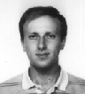
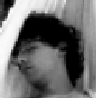
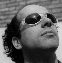
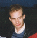
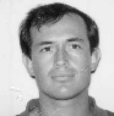
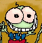
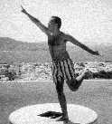

Les auteurs

Les auteurs |
|
Tous les auteurs travaillent (ou ont travaillé) pour le CEA/SHFJ
à Orsay, mis à part Jean Régis, qui opère pour
le Service de Neurochirurgie Stéréotaxique et Fonctionnelle
de La Timone à Marseille.

Là c'est Vincent FROUIN, le premier à avoir mis les pieds
dans le pétrin.

Alors lui c'est Jean-François MANGIN. Il est en train de pioncer
dans un hamac.

Ça c'est Dimitri PAPADOPOULOS-ORFANOS. Jolies, ses lunettes de soleil,
hein ?
Là c'est Cyril POUPON, il fait le beau au soleil, l'air de dire "j'suis
cool". Quel frimeur !

Ici c'est Fabrice POUPON, le grand frère de l'autre.

Et là c'est Jean RÉGIS, l'anatomiste de la bande.

Et là c'est Denis RIVIÈRE. c'est mon autoportrait, il est
magnifique.

Ici, Yann COINTEPAS (qui est aussi l'auteur de BrainVISA) remplace la statue
de Napoléon pendant sa restauration (un petit boulot d'été).
Il y a aussi des gens dont je n'ai pas les photos :
Fabien DELAYE
Olivier PIZZATO
Bernard SECHER
Renaud MAROY